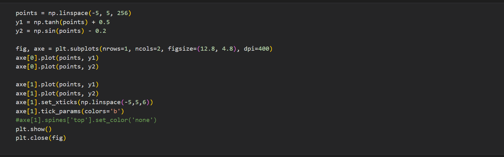
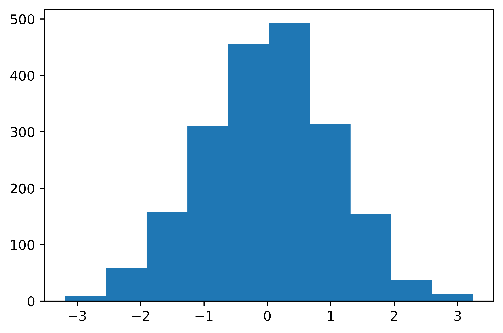
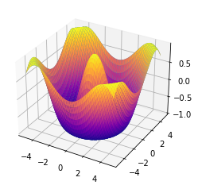

Matplotlib : A powerful Plotting Package

Below code is a way to call matplotlib package.
This is oneliner way to call plot without exposing the low level details. Actually, it picks the current axes.Don't worry about the axes(not x axis, axes contains axis and other objects of interest) we will discuss. The details are the tree like hierarchy in plt objects. From below image it would be clear.
Figure is the main canvas where the plot will hold, and every plot has associated axes which is controlled by figure The function subplots() helps us create a figure. If we don’t pass the nrows or ncols parameters, subplots() will create a figure with only one axes. figure is an instance and axes is an array of objects Then we associate data to each axes through plot()
Text(0.5, 1.0, 'the forth subplot')
output of above code
output of above code
There are 3 alternative ways to create Plot
1. Directly using pyplot module plot() function--

[matplotlib.lines.Line2D at 0x16afcd575e0]
output of above code

2. Plot from the axes object by calling subplot() of one plot
[matplotlib.lines.Line2D at 0x16afcc30b80]
output of above code
3. Plot from the figure object Here 111 is index,row,col
[matplotlib.lines.Line2D at 0x16afdc14eb0]
output of above code

Tick of a plot is the specific points on the coordinate axis By default axes will set a default tick based on the ranges of the axes
output of above code

Spine is the boundary of the axes i.e top, left, right, bottom spine is accessed through axes and to move spine, we can access set_position from spine object, passing axes and the position (0-1) parameter
output of above code

Legend is the description of the elements of the plot
output of above code
Annotate to identify data points Here bbox parameter is used to beautify
Text(0.4, -40, '1.464=tanh(2)+0.5')
output of above code
Adding Text to a plot, it is simpler than annotation
Text(-2.5, 0.5, 'two functions')
output of above code
Grid is way to understand the curve quickly. We can use grid() along with the parameters. We can connect grid with the major as well as minor tick
output of above code
Setting title to the axes and to the figure to tell about the figure
Text(0.5, 0.98, 'tanh & sin function')
output of above code
Creating very complex layout with GridSpec Although we can create layout with subplots(), gridspec() makes the layout more customizable We have to crete axes manually in this
Text(0.5, 0.5, 'forth plot')
output of above code
Creating subplots span rows and columns here gs[:,1] means column 1 contains only one image
Text(0.5, 0.5, 'third plot')
output of above code
Color definition in matplot is huge but mostly we use single character i.e 'b'
[matplotlib.lines.Line2D at 0x16a81a65400]
output of above code
Draw a Line plot
[matplotlib.lines.Line2D at 0x16a81acebb0,
matplotlib.lines.Line2D at 0x16a81acecd]
output of above code
Draw a Scatter Plot
[matplotlib.lines.Line2D at 0x16a81b49730]
output of above code
Draw a bar plot
output of above code
Stacking bar
BarContainer object of 8 artists
output of above code
Histogram plot---it helps to understand the distribution of the data
(array([ 9., 58., 158., 310., 456., 492., 313., 154., 38., 12.]),
array([-3.19056388, -2.54724417, -1.90392445, -1.26060474, -0.61728502,
0.02603469, 0.66935441, 1.31267412, 1.95599383, 2.59931355,
3.24263326]),
BarContainer object of 10 artists)
output of above code
Pie Chart
([matplotlib.patches.Wedge at 0x16a8217b370,
matplotlib.patches.Wedge at 0x16a8217b8e0,
matplotlib.patches.Wedge at 0x16a8217bdc0,
matplotlib.patches.Wedge at 0x16a821892e0,
matplotlib.patches.Wedge at 0x16a821897c0,
matplotlib.patches.Wedge at 0x16a82189ca0],
[Text(0.21305286529944611, 1.0791702722868604, 'Sun'),
Text(-1.085858860920759, 0.17581391913006217, 'Moon'),
Text(-1.0651900959848022, -0.2745360803535448, 'Jupiter'),
Text(-0.924137095653324, -0.5966327416740043, 'Venus'),
Text(-0.42967523513105893, -1.0126100889854246, 'Mars'),
Text(0.7997903711551759, -0.7552055099159871, 'Mecury')])
output of above code
BoxPlot: A standard way of displaying the dataset based on five summar min,max,median,first and third quartiles
{'whiskers': [matplotlib.lines.Line2D at 0x16a821dc67,
matplotlib.lines.Line2D at 0x16a821dca00,
matplotlib.lines.Line2D at 0x16a821e7fa0,
matplotlib.lines.Line2D at 0x16a821f3370,
matplotlib.lines.Line2D at 0x16a82201910,
matplotlib.lines.Line2D at 0x16a82201ca0,
matplotlib.lines.Line2D at 0x16a82215280,
matplotlib.lines.Line2D at 0x16a82215610],
'caps': [matplotlib.lines.Line2D at 0x16a821dcd90,
matplotlib.lines.Line2D at 0x16a821e7160,
matplotlib.lines.Line2D at 0x16a821f3700,
matplotlib.lines.Line2D at 0x16a821f3a90,
matplotlib.lines.Line2D at 0x16a8220c070,
matplotlib.lines.Line2D at 0x16a8220c400,
matplotlib.lines.Line2D at 0x16a822159a0,
matplotlib.lines.Line2D at 0x16a82215d30],
'boxes': [matplotlib.lines.Line2D at 0x16a821dc2e0>
matplotlib.lines.Line2D at 0x16a821e7c10,
matplotlib.lines.Line2D at 0x16a82201580,
matplotlib.lines.Line2D at 0x16a8220ceb0],
'medians': matplotlib.lines.Line2D at 0x16a821e74f0,
matplotlib.lines.Line2D at 0x16a821f3e20,
matplotlib.lines.Line2D at 0x16a8220c790,
matplotlib.lines.Line2D at 0x16a82223100],
'fliers': [matplotlib.lines.Line2D at 0x16a821e7880,
matplotlib.lines.Line2D at 0x16a822011f0,
matplotlib.lines.Line2D at 0x16a8220cb20,
matplotlib.lines.Line2D at 0x16a82223490],
'means': []}
output of above code
HeatMap Plot: It will help in learning the relationships between the variables imshow() helps us to create image with heatmap effect
matplotlib.colorbar.Colorbar at 0x16a8230a760
output of above code
Drawing 3D plot using surface plot meshgrid generate all x,y pair based on x y space Adding colormap based on z axis ---cmap is used in 3d drawing
class 'matplotlib.axes._subplots.Axes3DSubplot'
output of above code
